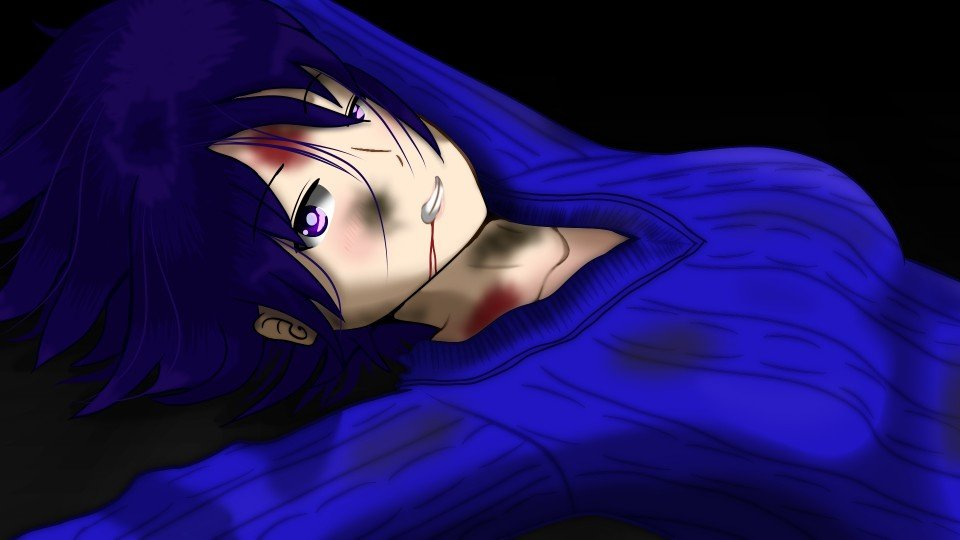

This scene is not unlocked yet in your progress
In the Moon's Shadow


"It's okay, looks like we got away."
We were hiding ourselves in the tall grass.
There weren't even any streetlights, and the moonlight was hidden by the thick leaves of the trees.
The road nearby was a narrow one that a single car could barely get through.
We were hiding ourselves in the tall grass.
There weren't even any streetlights, and the moonlight was hidden by the thick leaves of the trees.
The road nearby was a narrow one that a single car could barely get through.
"Daaamn, why won't Dad listen to me!
Hey, Goto!"
Haruka shouted into her phone under her breath, but as before, there was no response at all.
"Dammit, and the battery's about to die, too... Natsumi, turn on your phone."
Then, a strong wind raged across the whole area.
Haruka shouted into her phone under her breath, but as before, there was no response at all.
"Dammit, and the battery's about to die, too... Natsumi, turn on your phone."
Then, a strong wind raged across the whole area.

"Haruka! Look out!"
 video: 桜.wmv
video: 桜.wmv
The instant I shoved Haruka away, a nata plunged into that very spot.
"Damn! This way, Natsumi!"
We started running again.
"Damn! This way, Natsumi!"
We started running again.
video: 桜.wmv"Hah... hah..."
Running on the mountain road had, not surprisingly, started to wear me out.
No, was this just simple fatigue?
If this was that...
Running on the mountain road had, not surprisingly, started to wear me out.
No, was this just simple fatigue?
If this was that...
 video: 桜.wmv
video: 桜.wmv"We're okay here, there's no way we'll be in its line of sight."
Holding in our ragged breathing, we crouched in the grass again.
The wind kept raging, and the cherry blossoms were whirling down.
At that moment, my intuition gave me a warning―no, handed down a judgment.
That there was no way out anymore. That escaping was impossible.
Holding in our ragged breathing, we crouched in the grass again.
The wind kept raging, and the cherry blossoms were whirling down.
At that moment, my intuition gave me a warning―no, handed down a judgment.
That there was no way out anymore. That escaping was impossible.
video: 桜.wmvJust then, footsteps from in front―
The shinigami...!
Even though we were completely hidden, it was coming straight toward us.
The shinigami...!
Even though we were completely hidden, it was coming straight toward us.
 video: 桜.wmv
video: 桜.wmv"What is that thing...! How does it know where we are!?"
No matter where we hid, the shinigami pinpointed exactly where we were and came right after us.
No matter where we hid, the shinigami pinpointed exactly where we were and came right after us.
video: 桜.wmvOnce you've been cursed, it chases you wherever you go.
That is death, and the shinigami who governs death.
That is death, and the shinigami who governs death.
video: 桜.wmvNo, that's wrong! That thing is just someone in disguise, using some trick!
A shinigami? That's as far-fetched as it gets!
That one, like this, in the past, as many as six people...!
And now... even my dad!
A shinigami? That's as far-fetched as it gets!
That one, like this, in the past, as many as six people...!
And now... even my dad!
video: 桜.wmv"Hey, Natsumi! Let's hurry to the wide road! Hiding's no good!"
Haruka took my hand again, and started running.
My legs already felt like lead, but I couldn't stop here.
If I stopped, even Haruka would fall prey to the shinigami.
Because earlier, the shinigami had tried to slash Haruka with the nata.
Haruka took my hand again, and started running.
My legs already felt like lead, but I couldn't stop here.
If I stopped, even Haruka would fall prey to the shinigami.
Because earlier, the shinigami had tried to slash Haruka with the nata.
video: 桜.wmvBut, as I thought, this didn't seem to be simple fatigue.
Yes, I have an illness peculiar to this time of year.
And it had started to set in at the worst possible time.
Yes, I have an illness peculiar to this time of year.
And it had started to set in at the worst possible time.

―Running down the narrow asphalt mountain road, colored by a storm of cherry petals.
It looked like there was still quite a distance to the wide road.
It looked like there was still quite a distance to the wide road.
"Haruka, sorry...! Wait!"
"What's wrong!? If you're tired, lean on my shoulder!"
"That too, but...
at a time like this..."
"Don't tell me... your April sickness..." [TN: A pun on gogatsu-byo, 'May sickness,' Japan's term for the May blues.]
That distinctive dizziness, and the drained feeling.
Having nothing wrong with me all day today, that had been the abnormal part.
"Don't tell me... your April sickness..." [TN: A pun on gogatsu-byo, 'May sickness,' Japan's term for the May blues.]
That distinctive dizziness, and the drained feeling.
Having nothing wrong with me all day today, that had been the abnormal part.

There was no sign of anything following from behind.
On one side was a high rock wall, on the other a cliff, so there was no route the shinigami could come by except from behind.
The road was as narrow as ever, though...
On one side was a high rock wall, on the other a cliff, so there was no route the shinigami could come by except from behind.
The road was as narrow as ever, though...
"Haruka, get away by yourself..."

"Are you an idiot! I told you I'd protect you, Natsumi, no matter what!
Besides, Dad's after me too. Getting away by myself would come to the same thing!"

Haruka put my arm over her shoulder and started walking.
Haruka had to be pretty exhausted, too.
Haruka had to be pretty exhausted, too.
No, the shinigami too, carrying those weapons, had to be pretty worn out.
It probably couldn't come after us very fast.
It probably couldn't come after us very fast.
"Sorry, Haruka... for causing you trouble even at a time like this..."
"When you get down to it, it's because I told you not to go to the police... I'm the one who dragged you into this... No matter how many times I got down on my knees and bowed, it wouldn't make up for it..."
"When you get down to it, it's because I told you not to go to the police... I'm the one who dragged you into this... No matter how many times I got down on my knees and bowed, it wouldn't make up for it..."
"Haruka... do you still think it was your dad, Haruka, who appeared because of the curse?"
"I wonder about that... Actually, I'm starting to think something's a little off. I thought it had come to kill Natsumi, but it's weirdly dragging things out, or something; it won't try to kill right away. And, just now, it tried to cut me with the nata too. If it's Dad... what's he thinking..."
"I wonder about that... Actually, I'm starting to think something's a little off. I thought it had come to kill Natsumi, but it's weirdly dragging things out, or something; it won't try to kill right away. And, just now, it tried to cut me with the nata too. If it's Dad... what's he thinking..."
If it had that monstrous strength and a way to pin down exactly where we were, killing us would probably be no trouble at all.
Why such a roundabout way? Was it enjoying the crime?
No, if I hadn't shoved Haruka away earlier, Haruka would have been killed.
Why such a roundabout way? Was it enjoying the crime?
No, if I hadn't shoved Haruka away earlier, Haruka would have been killed.
"Natsumi, you were feeling good all day today, right?"
"Yeah... sorry..."
"No, that's not it, I'm not blaming you. I got to thinking. Maybe what brings on Natsumi's April sickness attacks isn't just the cherry blossoms..."
"What do you mean...?"
"About today's weather..."
"Yeah... sorry..."
"No, that's not it, I'm not blaming you. I got to thinking. Maybe what brings on Natsumi's April sickness attacks isn't just the cherry blossoms..."
"What do you mean...?"
"About today's weather..."
"It's Goto!

Hello!?"
"Senpai, you alive!?"
"Somehow... Technically, not a scratch."
Haruka's breathing had gotten quite ragged.
I sank down right where I was.
"Senpai, you alive!?"
"Somehow... Technically, not a scratch."
Haruka's breathing had gotten quite ragged.
I sank down right where I was.
"We'll be there soon too! It'll still take... 40 minutes, though...
Oh, but the local police should get there in about 10 minutes!"
"10 minutes, huh... But no matter how far down the mountain we go, the mountain road doesn't end..."
"If you go about 2 kilometers down the road along Sakuraoka Station, the road suddenly opens up and there should be a convenience store. Run in there!"
Suddenly, a man's voice―probably the police officer who, I'd heard, had been mistaken for a suspicious person.
"10 minutes, huh... But no matter how far down the mountain we go, the mountain road doesn't end..."
"If you go about 2 kilometers down the road along Sakuraoka Station, the road suddenly opens up and there should be a convenience store. Run in there!"
Suddenly, a man's voice―probably the police officer who, I'd heard, had been mistaken for a suspicious person.
"Then we should be getting there pretty soon. Thank you."
So if I just got up with everything I had and walked a few hundred meters, would it somehow work out?
I couldn't let a mere April sickness wear me down like this.
Then, the wind suddenly picked up again.
So if I just got up with everything I had and walked a few hundred meters, would it somehow work out?
I couldn't let a mere April sickness wear me down like this.
Then, the wind suddenly picked up again.
Huh...? Suddenly my vision...
An even more violent dizziness assailed me, and every sensation was gone.
An even more violent dizziness assailed me, and every sensation was gone.
"...mi!
Natsumi!

Pull yourself together!"
"Haruka...?"
"So you really...!"
It seemed I had only been unconscious for a few seconds...
"Haruka...?"
"So you really...!"
It seemed I had only been unconscious for a few seconds...
"No, never mind that right now. Let's go, hang in there!"
Haruka tried to get me to stand, but there was no strength in my legs.
If we stayed stuck here, the shinigami would probably catch up with us.
"Haruka... sorry... I... think this is as far as I go..."
"It's okay! I'm right here with you!"
"But... the April sickness... Sorry, get away by yourself after all..."
Haruka tried to get me to stand, but there was no strength in my legs.
If we stayed stuck here, the shinigami would probably catch up with us.
"Haruka... sorry... I... think this is as far as I go..."
"It's okay! I'm right here with you!"
"But... the April sickness... Sorry, get away by yourself after all..."
"Don't be ridiculous! I'm never leaving you behind!"
"But, the one being targeted was you, Haruka!"
"That doesn't mean...!"
"Goto, please! Persuade Haruka!"
"But, the one being targeted was you, Haruka!"
"That doesn't mean...!"
"Goto, please! Persuade Haruka!"
"Are you sure? Kogori-senpai..."
"Please..."
"Niimura-senpai, first, please run to the convenience store and call for help."
"Please..."
"Niimura-senpai, first, please run to the convenience store and call for help."
"Goto! Knock it off! Think of a way for me to survive together with Natsumi!
Besides, against something like that, going to a convenience store won't do any good!"
"In the Megasawa City case, the culprit was never seen by anyone. So a convenience store, with security cameras and people's eyes, is something the culprit should hate. Besides, was Kogori-senpai attacked by this so-called shinigami?"
"Huh!? What's that supposed to mean!"
"Could it be that the only one attacked was Niimura-senpai?"
"And what about it!"
"In the Megasawa City case, the culprit was never seen by anyone. So a convenience store, with security cameras and people's eyes, is something the culprit should hate. Besides, was Kogori-senpai attacked by this so-called shinigami?"
"Huh!? What's that supposed to mean!"
"Could it be that the only one attacked was Niimura-senpai?"
"And what about it!"
"The shinigami's target is Niimura-senpai. If you want to make sure Kogori-senpai is safe, Niimura-senpai, please stay away from her."
"It just happened to be me that got attacked!"
"If the two of you act separately, the shinigami can only go after one of you. The fewer victims, the better. Please understand, it's for Kogori-senpai's sake."
"If you're saying it's for Natsumi's sake, then I, by her side―"
"It just happened to be me that got attacked!"
"If the two of you act separately, the shinigami can only go after one of you. The fewer victims, the better. Please understand, it's for Kogori-senpai's sake."
"If you're saying it's for Natsumi's sake, then I, by her side―"
"The shinigami is closing in fast. Rather than going to the convenience store with Kogori-senpai, it should be faster for Niimura-senpai to run there and back."
"But... I can't leave Natsumi behind...!"
"Please throw away your self-righteous idea of justice. That's just self-satisfaction, Niimura-senpai."
"Goto...! You're saying I'm acting out of self-satisfaction!?"
"But... I can't leave Natsumi behind...!"
"Please throw away your self-righteous idea of justice. That's just self-satisfaction, Niimura-senpai."
"Goto...! You're saying I'm acting out of self-satisfaction!?"
"We're wasting time. Please hurry."
"Ngh...! Why won't you understand! Abandoning Natsumi and running away, something like that―"
""
"Hey, are you listening!?"
""
"Damn! Now, of all times, the battery's dead...!"
"Ngh...! Why won't you understand! Abandoning Natsumi and running away, something like that―"
""
"Hey, are you listening!?"
""
"Damn! Now, of all times, the battery's dead...!"
Haruka turned her face toward me, her lips trembling.
"I'll be back in 3 minutes. I'm going to save you, no matter what."
"Yeah..."
"Yeah..."
"Even if it costs my life, I'll protect you."
I watched Haruka run off down the road with all her strength.
Thank you, Goto. Now Haruka should be saved.
And... I'm sorry, Haruka.
It looks like I won't be saved, after all.
Thank you, Goto. Now Haruka should be saved.
And... I'm sorry, Haruka.
It looks like I won't be saved, after all.

A faint light came into view from behind.
It seemed to be a car.
I had sensed it when I collapsed earlier.
The shinigami is coming after me. Now, there's no way I can run anymore.
The one riding in that car is―
It seemed to be a car.
I had sensed it when I collapsed earlier.
The shinigami is coming after me. Now, there's no way I can run anymore.
The one riding in that car is―

The shinigami.
At that rate, it would have caught up with us before we reached the convenience store together.
So if I hold the shinigami back here, I can save Haruka.
This time, it's one or the other: either I die, or we both die.
At that rate, it would have caught up with us before we reached the convenience store together.
So if I hold the shinigami back here, I can save Haruka.
This time, it's one or the other: either I die, or we both die.
Goto doesn't know that the shinigami is closing in on me in a car.
Goto only worked out the way that gave us a better chance of surviving.
Goto's goodwill, I made use of it.
Goto only worked out the way that gave us a better chance of surviving.
Goto's goodwill, I made use of it.

Ah, by the car closing in at furious speed, in 3 more seconds, I will probably be crushed.
I'm sorry, Mom, Goto, and Haruka.
Dad, I'm coming to see you.
I'm sorry, Mom, Goto, and Haruka.
Dad, I'm coming to see you.
video: 桜.wmv"Ha... Haruka...?"
 video: 桜.wmv
video: 桜.wmv"Ugh... ngh...
Na... tsumi... are you... okay...?"
The one who should have gotten away alone, Haruka, why... Why is she lying there, covered in wounds?
The one who should have gotten away alone, Haruka, why... Why is she lying there, covered in wounds?
video: 桜.wmv
Behind her, backlit by the car's taillights, stood the shinigami.

video: 桜.wmv"Kh, heh heh heh heh... hey... Dad...
What's the matter... I... I'm still...
alive..."
"Haruka... for... me..."
"Ha, hahaha...! Serves you right! The curse failed...! Getting me killed, me without a paper doll... you're a failure as a shinigami!
"Haruka... for... me..."
"Ha, hahaha...! Serves you right! The curse failed...! Getting me killed, me without a paper doll... you're a failure as a shinigami!
 video: 桜.wmv
video: 桜.wmv Ugh...!"
video: 桜.wmv"Haruka, don't... talk anymore... Hurry, to a hospital..."
video: 桜.wmv"H-hey, Dad... I... win, right...?
So... at least Natsumi...
at least let Natsumi go...
A request right before I die, at least... hear... me...
 video: 桜.wmv
video: 桜.wmvout..."
video: 桜.wmv"Haruka...?
Haruka...! No, wake up!
I don't want you to die! Please, wake up!"
""
"No... Haruka..."
""
"No... Haruka..."
video: 桜.wmv
"Harukaaaaa!"
Read ✓ Next: What I Can Do →